14 capturas reais da revisão no Roblox Studio. Celular em modo horizontal. Esta prévia mostra telas estáticas; as animações devem ser avaliadas dentro do jogo. Os ícones oficiais dos passes aguardam seu envio.
A grade aprovada do diário foi mantida. O atalho de equipamentos na tela de viagem agora leva ao Ignis; a captura dessa tela foi feita antes de atualizar o rótulo.
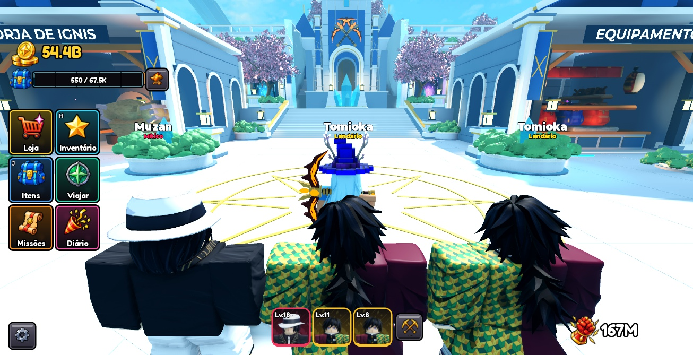
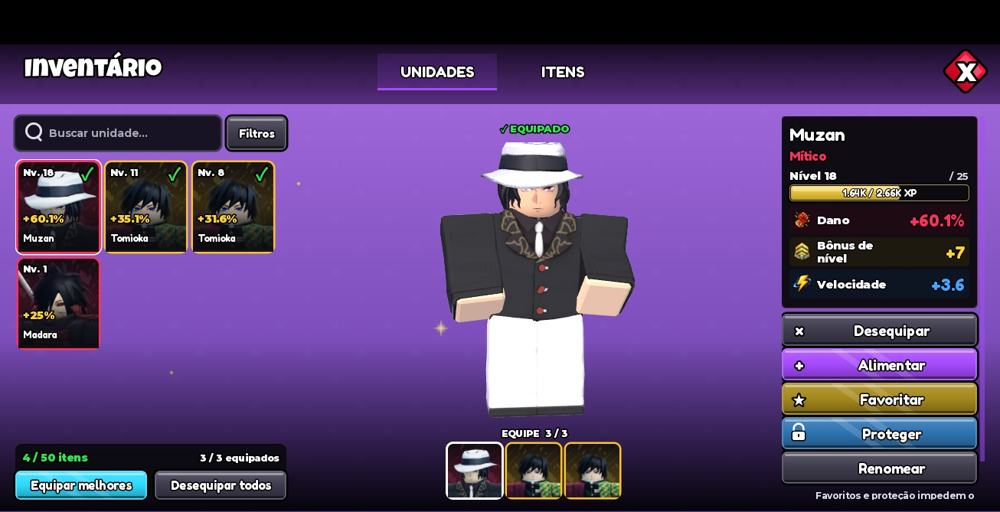
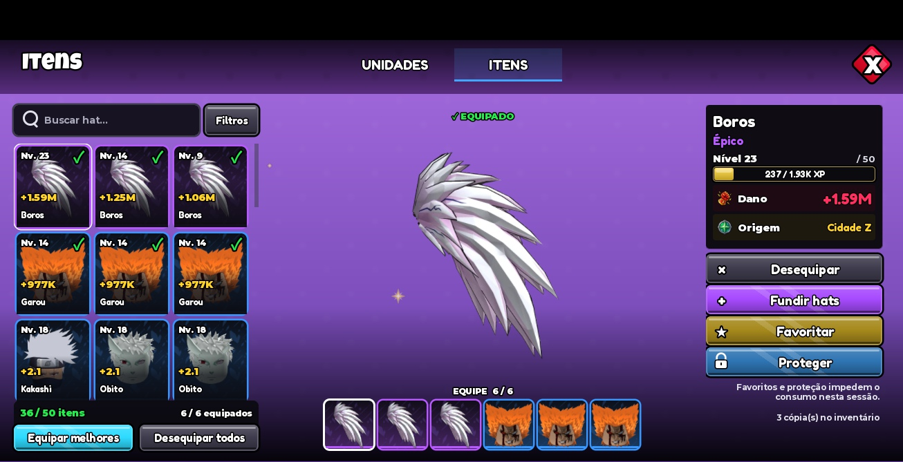
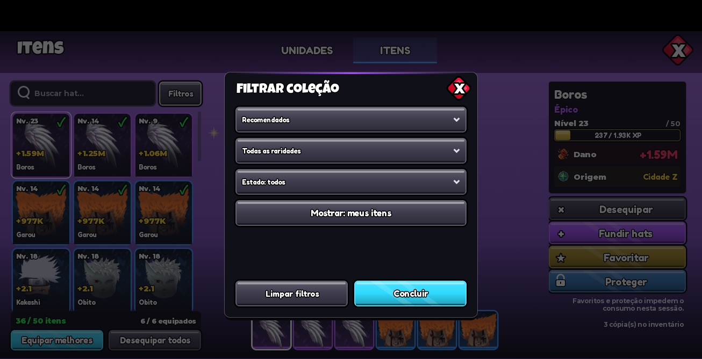
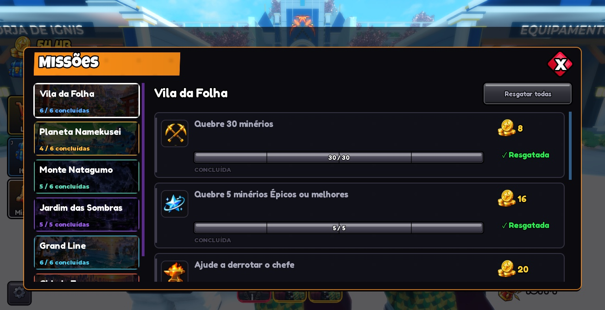
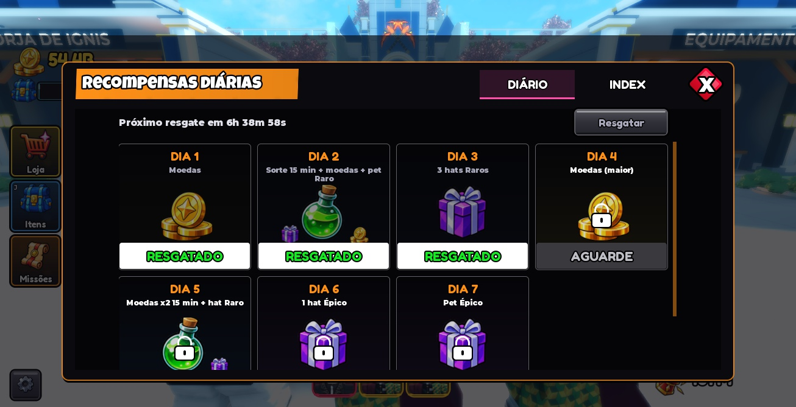
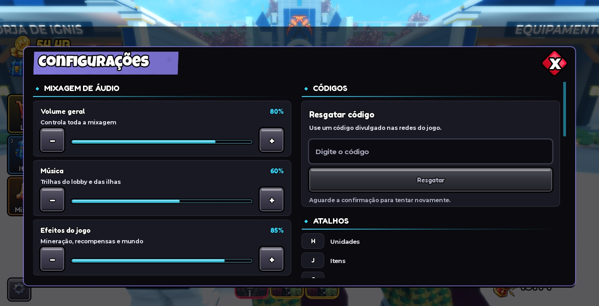
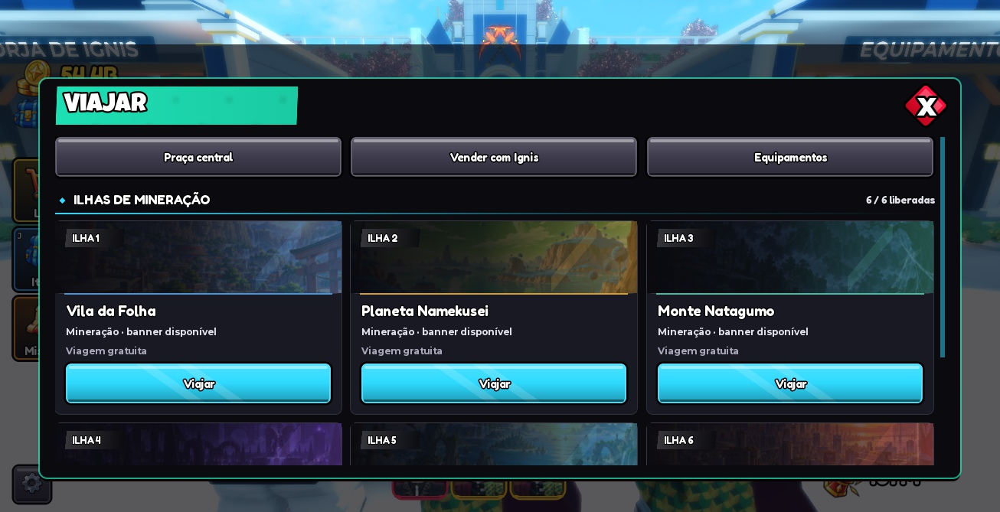
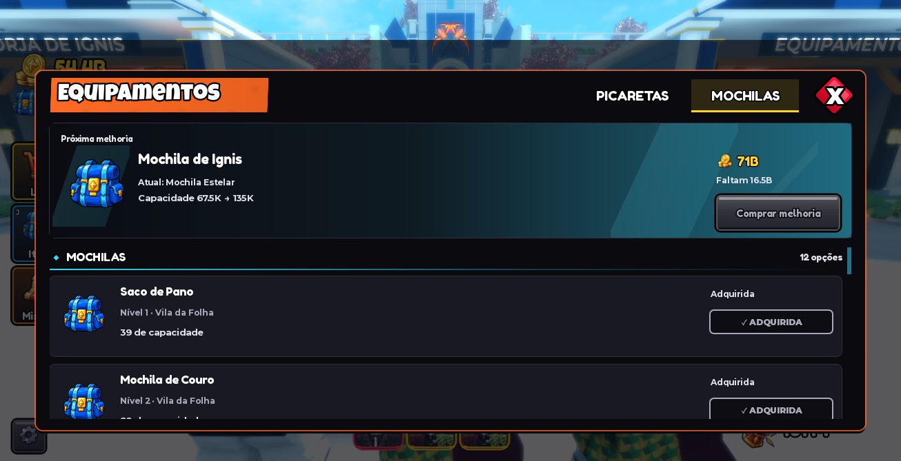
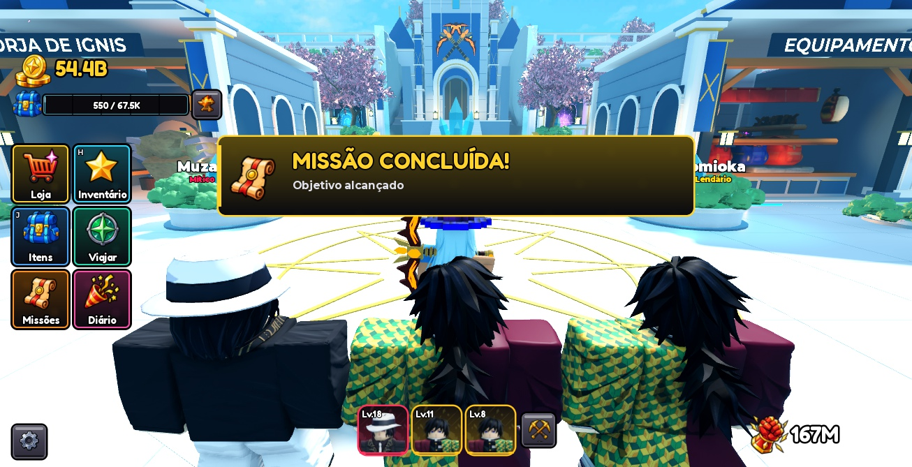
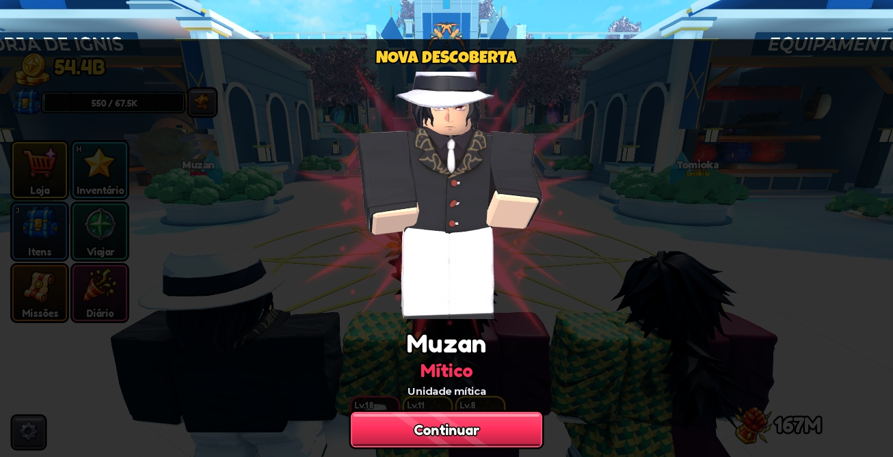
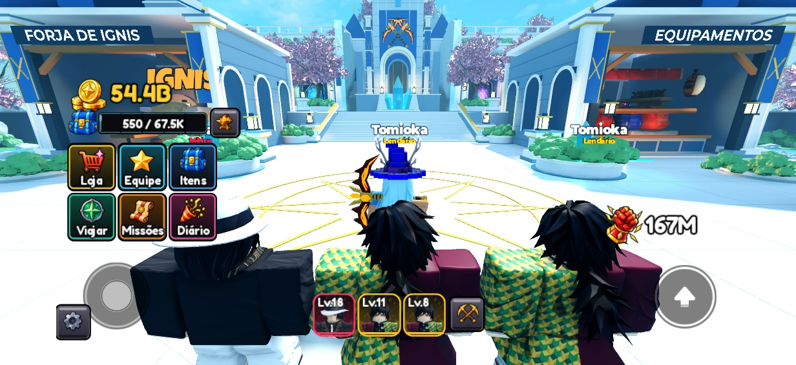
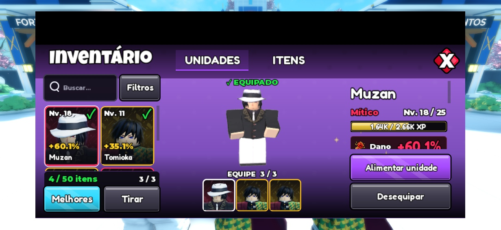
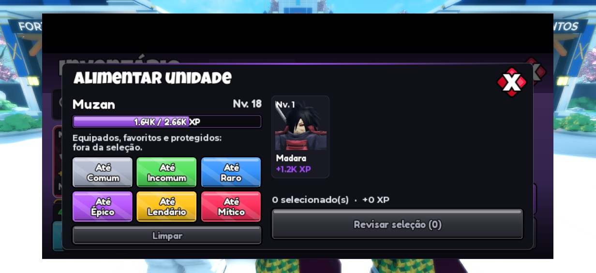